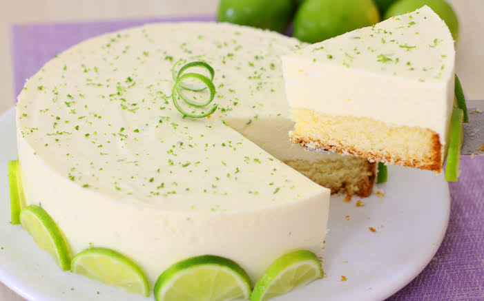
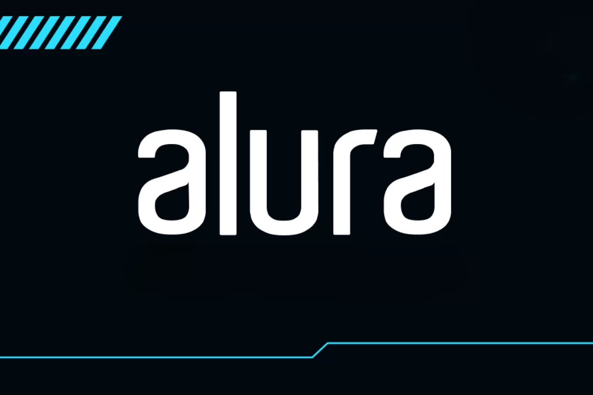
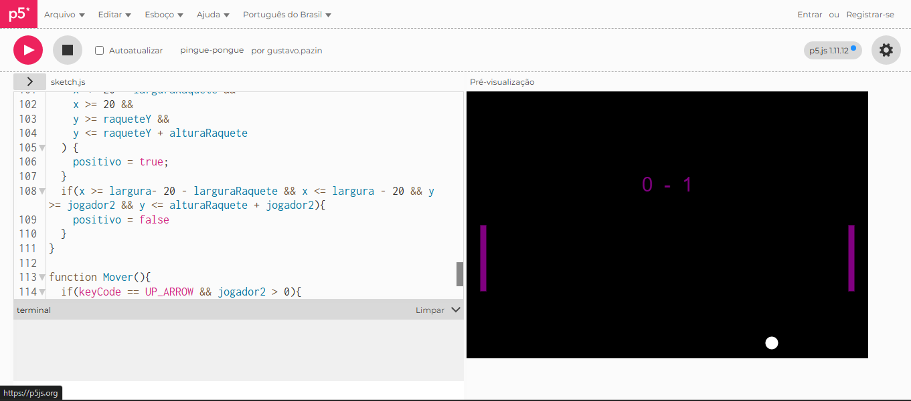
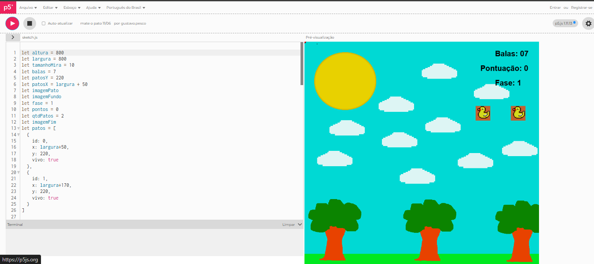

Hoje, dia 12/06, na nossa escola Décio Dossi tivemos um bolo,
pensa num bolo bom, parece mais torta mais gostoso.
Era feito de limão

Feito por: Jhonas Muller Da Silva "Aluno do 1B"
No dia 14/06 começamos a fazer um site de atividade do Alura
junto com professor Lucas. Com ajuda das aulas do Alura e do
professor Lucas fizemos o index que é a cabeça do site,
aprendemos diferentes tags.
Curiosidade
Inclusive este site que você está lendo foi inspirado no do Alura.

Feito por: Endrew "Aluno 1B"
O curso é muito bom! Já aprendi um pouco de JavaScript criando
jogos simples, como Pong, e agora começamos a aprender coisas
mais complexas de um jeito bem divertido. Além disso, estudar
à noite é muito mais libertador, e a escola fica completamente
diferente, tornando até coisas chatas, como trabalhos gigantes,
mais fáceis de fazer.

Feito por: Alessandro "Professor de Lógica Computacional"
O curso de jogos digitais é vital porque ele prova que exatas
e humanas nunca deveriam ter sido separadas. Nossos alunos
constroem empatia de forma de códigos, criam através de
algoritmos e transformam linhas de raciocínio em experiências
que emocionam.
Feito por: Gustavo Renan "Aluno 1B"
Estou gostando muito do curso! Já aprendemos HTML e começamos
a usar JavaScript para criar sites e jogos. As aulas no
laboratório são muito legais, e os professores são incríveis,
sempre ajudando e explicando tudo com paciência. Estou
aprendendo bastante e recomendo o curso para quem gosta de
tecnologia e jogos!

Feito por: Lucas "Professor de programação e coordenador"
Nosso objetivo é preparar os alunos para o mercado de trabalho,
mas também para os próximos passos da sua formação. No curso,
eles aprendem na prática, desenvolvem projetos, descobrem novas
possibilidades na área de tecnologia e constroem uma base que
pode abrir portas tanto para o mundo profissional quanto para
a universidade.
Feito por: Monica "Pedagoga"
O curso técnico possibilita que o estudante faça escolhas mais
assertivas quando for escolher o caminho do mundo do trabalho.
As habilidades desenvolvidas no curso são fundamentais para
acompanhar a educação digital e a criatividade de quem apresentar
inovação e qualidade nos seus projetos.
Feito por: Maurício
Curso de programação de jogos digitais.
Estamos com a segunda turma do curso em nosso colégio, e cada vez
mais, temos a certeza que estamos no caminho certo.
Mais do que aprender a programar ou desenvolver jogos, nossos alunos
estão construindo competências para o mundo do trabalho, ampliando
suas possibilidades profissionais e preparando-se para uma área que
apresenta grande demanda e muitas oportunidades.
Tenho certeza, que formaremos profissionais preparados para atender
a demanda cada vez maior, mas, principalmente, transformar o curso,
e nosso colégio em referência de qualidade.